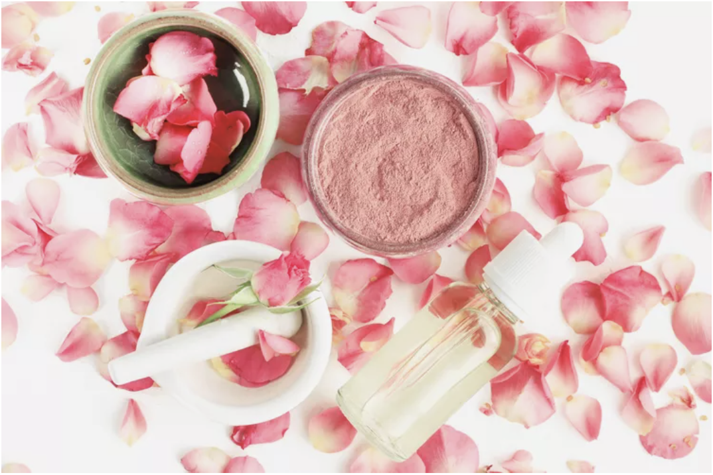

Homemade Rose Blush

Rose Petal Blush Recipe
A homemade blush recipe to create a soft pink glow and a lovely floral scent.
Ingredients
- 1 teaspoon kaolin clay
- 1/2 teaspoon pink sweet potato powder
- 1/2 teaspoon organic cocoa powder
- 3 teaspoon rose petal powder
Steps
- In a small bowl, mix kaolin clay, pink sweet potato powder, cocoa powder and rose petal powder until well blended.
- Adjust color as needed by added more cocoa powder for a darker blush or more pink sweet potato powder for a lighter pinker blush.
- Store blush in a small glass jar or blush container.